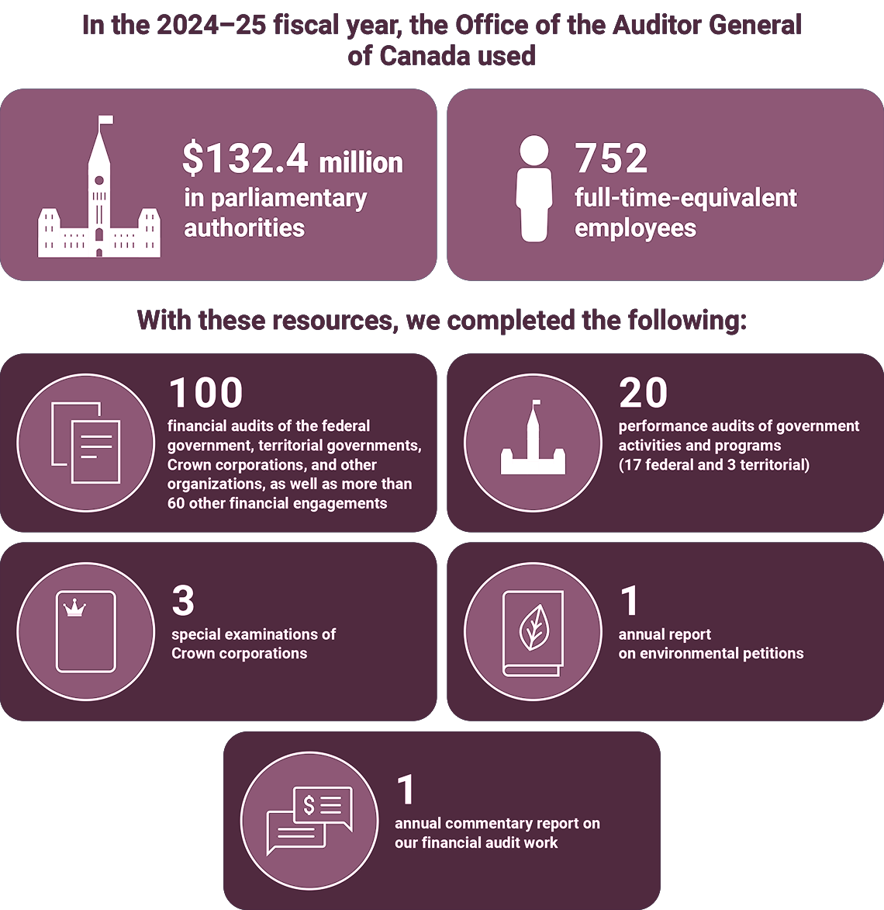
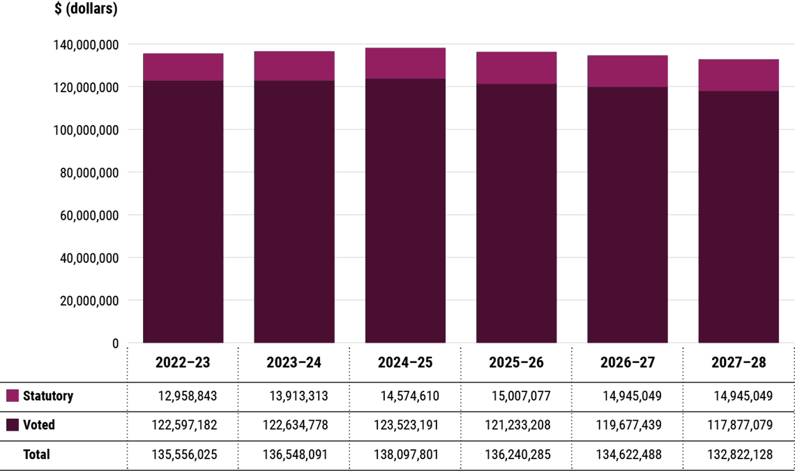

This departmental results report details the Office of the Auditor General of Canada’s (OAG’s) accomplishments against the plans, priorities, and expected results outlined in its 2024–25 Departmental Plan.

In the 2024–25 fiscal year, the Office of the Auditor General of Canada used $132.4 million in parliamentary authorities and had 752 full‑time‑equivalent employees.
With these resources, we completed the following:
In the 2024–25 fiscal year, the OAG advanced multiple initiatives in support of our core responsibility, legislative auditing, with a particular focus on the following priorities:
For complete information on the OAG’s total spending and human resources, read the “Spending and human resources” section of this report.
The following provides a summary of the OAG’s achievements in 2024–25 under its main area of activity, called “core responsibility.”
In 2024–25, we completed 20 performance audits, 3 special examinations of Crown corporations, 100 financial audits and more than 60 additional financial engagements, and our annual environmental petitions and financial commentary reports, as detailed in the infographic above. In addition, we follow up on recommendations issued in our audits to assess whether they have been implemented, and we report on this through our departmental result indicators. We measured the percentage of audit recommendations implemented for each of the types of audits we conduct. The 2024–25 results can be found in Exhibit 1.
For more information on the OAG’s core responsibility of legislative auditing, read the “Results—What we achieved” section of this report.
I am proud to present the OAG’s departmental results report for 2024–25. Over the past fiscal year, we have made progress in achieving important milestones that strengthen our ability to fulfill our mandate. I am also pleased to highlight the results of our efforts to provide legislators with independent information to support their role in holding government to account for financial responsibility, well‑managed programs, and transparency in public reporting.
In this report, you will find an overview of our key initiatives, our performance results, and the impact our work has had over the past fiscal year. However, before highlighting specific achievements, I want to acknowledge that my office’s results in the most recent Public Service Employee Survey reflect that we have been an organization that has been navigating significant change over the last few years to modernize who we are and how we work. Change is challenging, and our survey results flag important concerns and areas where we must improve. Senior management remains committed to listening, learning, and taking meaningful action so that we can better support our employees through this transition. In a time of transformation like the one we are navigating, it is the strength and commitment of individuals that carry the organization forward. I am grateful for their contributions, and I will be relying on all employees as we continue to modernize our approaches, increase our efficiency, and enhance our productivity. I look forward to continuing this journey with them throughout the second half of my mandate.
This report represents the second year that we are reporting on our revised departmental results framework. Our departmental result indicators help measure the progress that audited organizations have made in implementing the actions that they committed to in response to our audit recommendations. This in turn promotes greater transparency and accountability in improving public sector programs and services. Of our 3 departmental result indicators, 2 have exceeded their targets this year.
Our legislative audit work, the core of our mandate, remains central to our efforts. The professional services contracts audit discussed good practices that all federal organizations should follow when procuring professional services on behalf of the federal government, while the audit report on cybercrime recommended several ways for Canada’s cybersecurity systems and processes to be strengthened across organizations. The follow‑up audit of child and family services in Nunavut, the fourth on this topic since 2011, found that while the territory’s Department of Family Services had taken initial actions to address previously identified failures affecting services for children, youth, and families, much work remains to be done to ensure that sufficient protection is provided under Nunavut’s Child and Family Services Act. We have committed to regular follow‑up audits on this topic because it has a significant and direct impact on the health and well‑being of children and families in Nunavut.
As part of our performance audit work, the Commissioner of the Environment and Sustainable Development provided Parliament with audit reports that focused on increasingly important issues related to climate change and sustainability and included topics such as contaminated sites in the North, advancing the government’s goal to reduce plastic waste by 2030, and protecting species at risk in Canada. The 2024–25 fiscal year also marked our second year of reporting under the Canadian Net‑Zero Emissions Accountability Act, assessing progress on climate change mitigation measures and providing recommendations to guide further action.
In 2024–25, we advanced several important internal initiatives. For example, we made key improvements to our audit processes as part of a multi‑year effort to strengthen how we select and conduct audits. We also made progress in modernizing our services and IT infrastructure, renewed several of our workspaces, and achieved key milestones in our broader workplace renewal plans.
I would like to express my deepest gratitude to everyone who has contributed to our successes this past year. I am exceptionally proud of the outstanding work delivered by our dedicated employees, who consistently uphold the highest standards of quality and integrity. And as I mentioned above, with our combined strength and commitment, together we will transform the organization to accomplish great things for a better Canada, one audit at a time.
Karen Hogan, FCPA
Auditor General of Canada
Exhibit 1 shows the target, the date to achieve the target, and the actual result for each indicator under legislative auditing in the last 2 fiscal years.
Departmental result: Government acts on recommendations to improve public sector programs, service delivery, and financial management and reporting.
| Departmental result indicator | Target | Date to achieve target | Actual resultFootnote 1 |
|---|---|---|---|
| Percentage of performance audit and special examination recommendations implemented | At least 85% of the recommendations have been implemented, 3 years after tabling | 31 March 2025 | 2023–24: 84% 2024–25: 88%Footnote 2 |
| Percentage of financial audit recommendations implemented | At least 85% of the recommendations have been implemented, 2 years after they were issued | 31 March 2025 | 2023–24: 91% 2024–25: 88%Footnote 3 |
| Percentage of measures examined for which progress made is assessed as “substantial improvement” | At least 85% of the measures have improved, 3 years after tabling | 31 March 2025 | 2023–24: 50% 2024–25: 55%Footnote 4 |
Exhibit 7 summarizes the OAG’s approved voted and statutory funding from 2022–23 to 2027–28.

Exhibit 7 includes the following information in a bar graph:
| Fiscal year | Statutory | Voted | Total |
|---|---|---|---|
| 2022–23 | $12,958,843 | $122,597,182 | $135,556,025 |
| 2023–24 | $13,913,313 | $122,634,778 | $136,548,091 |
| 2024–25 | $14,574,610 | $123,523,191 | $138,097,801 |
| 2025–26 | $15,007,077 | $121,233,208 | $136,240,285 |
| 2026–27 | $14,945,049 | $119,677,439 | $134,622,488 |
| 2027–28 | $14,945,049 | $117,877,079 | $132,822,128 |
| 2025 | 2024 | |
|---|---|---|
| Financial assets | ||
|
Due from the Consolidated Revenue Fund
|
9,618 | 14,590 |
|
Accounts receivable (note 4)
|
1,515 | 556 |
|
Accounts receivable held on behalf of the Government of Canada (note 4)
|
(1,380) | (125) |
| Financial assets subtotal | 9,753 | 15,021 |
| Liabilities | ||
|
Accounts payable and accrued liabilities (note 5)
|
9,340 | 14,471 |
|
Vacation pay
|
9,168 | 9,668 |
|
Sick leave benefits (note 6b)
|
1,990 | 2,211 |
|
Severance benefits (note 6c)
|
1,304 | 1,491 |
|
Maternity/parental leave benefits (note 6d)
|
626 | 469 |
| Liabilities subtotal | 22,428 | 28,310 |
| Net debt | (12,675) | (13,289) |
| Non-financial assets | ||
|
Tangible capital assets (note 7)
|
2,887 | 3,220 |
|
Prepaid expenses
|
419 | 509 |
| Non-financial assets subtotal | 3,306 | 3,729 |
| Accumulated deficit | (9,369) | (9,560) |